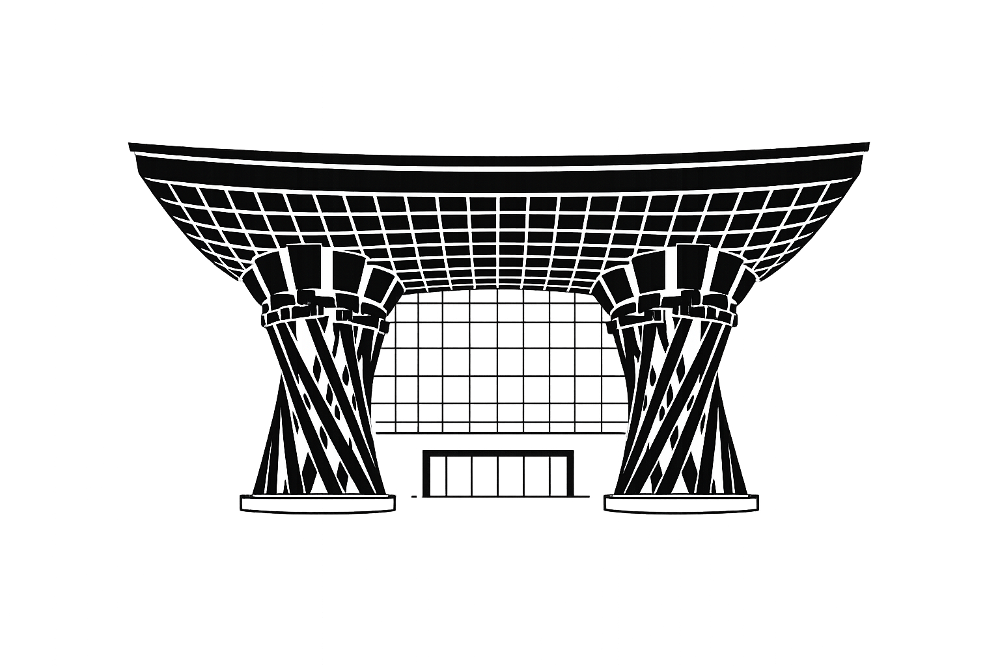

50}">{{ loadingProgress }}%
營業時間: {{ item.hours }}
門票: {{ item.ticket }}
{{ item.notes }}
請輸入您的 Gemini API 金鑰以啟用即時 AI 導覽。此金鑰僅會保存在您當前設備的瀏覽器中，不會公開上傳至 GitHub，確保安全。
* 以模擬匯率 0.21 計算
去程 6/22 (中華航空 C1154)
TPE (桃園) 07:30 NGO (名古屋) 11:20
回程 6/28 (臺灣虎航 IT253)
KMQ (小松) 16:55 TPE (桃園) 19:10
{{ h.name }}
{{ h.dates }}
{{ h.address }}
{{ h.tel }}
總花費 (JPY)
¥ {{ totalExpenses.toLocaleString() }}
尚無花費紀錄
{{ exp.name }}
{{ exp.date }} | {{ exp.payment }}
正在搜尋在地故事與攻略...